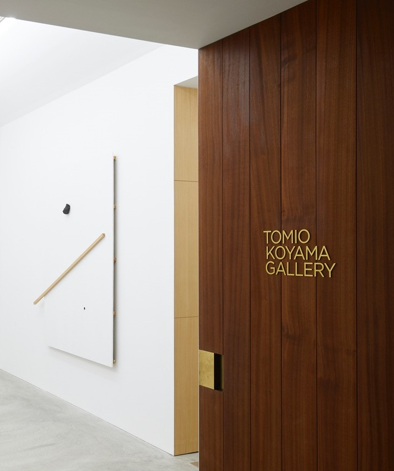

Kinh nghiệm phiêu lưu Tokyo
Lấy bối cảnh ở Otemachi, Aman Tokyo nằm ngay trước cửa Cung điện Hoàng gia xanh tươi và chỉ cách khu phố nhộn nhịp và các cửa hàng của Ginza vài bước chân. Trung tâm thương mại lịch sử của thời Edo, Nihonbashi, cũng ở gần đó. Cũng như vậy, quận Shibuya náo nhiệt và những kẻ phá hoại bầu trời của Shinjuku, trong khi những chuyến đi xa hơn thủ đô có thể được sắp xếp, bao gồm cả Mt Fuji mang tính biểu tượng

Nghệ thuật Tokyo
Thực hiện một chuyến tham quan về văn hóa và lịch sử sáng tạo của Tokyo với Hành trình nghệ thuật được thiết kế riêng qua các phòng trưng bày nghệ thuật đương đại và cổ điển của thành phố. Người trong cuộc Renna Okubo và Wakako Tezen, cả những người phụ trách và tư vấn có kinh nghiệm, dẫn các tour du lịch bespoke được xây dựng xung quanh lợi ích cá nhân, bao gồm cả phòng trưng bày hàng đầu và không gian nghệ thuật độc lập ngoài luồng thường không thể tiếp cận với công chúng. Sau khi tham khảo ý kiến sơ bộ, Renna và Wakako phát triển hành trình một ngày cá nhân bằng ô tô riêng, có thể bao gồm nghệ thuật cổ điển Nhật Bản, gốm sứ, nhiếp ảnh, điêu khắc, và cũng có thể kết hợp các chuyến thăm đến các địa danh kiến trúc, cũng như các cửa hàng sách và văn phòng phẩm tôn kính. Lý tưởng cho cả những người sành kinh nghiệm và tò mò về văn hóa.
Khu vườn hoàng gia chỉ là một vài phút về phía tây
Các khu đất rộng lớn được trải rộng xung quanh tàn tích của lâu đài Edo - trung tâm của Tokyo trong nhiều thế kỷ - mang đến một không gian xanh trong thành phố đông dân nhất thế giới
Sakan, hay thạch cao Nhật Bản, là một nghệ thuật thủ công cổ xưa mà các phương pháp xây dựng hiện đại đang nhanh chóng bỏ lại phía sau
Một số thợ thạch cao bậc thầy vẫn còn ở Nhật Bản, nhưng Syuhei Hasado đã tìm ra cách kết hợp thực hành lâu đời này với các kỹ thuật đương thời để tái tạo truyền thống cho thời hiện đại. Duyên dáng, chính xác và được truyền cảm hứng từ thiên nhiên, nghệ thuật làm bằng tay của ông có thể được tìm thấy trên khắp các hành lang của Aman Tokyo
Tham dự một buổi Iaido riêng tập trung vào các cuộc diễn tập và nghi thức samurai
Có niên đại từ thế kỷ 16, môn võ duyên dáng này bao gồm hàng trăm phong cách kiếm thuật, phản ánh sự tinh tế và đạo đức của chiến binh Nhật Bản nguyên mẫu
Có thể nhìn thấy vào những ngày trời quang, Mt Fuji là cao nhất của Nhật Bản và khổng lồ của sự đối xứng
Là di sản thế giới của UNESCO, đỉnh núi lửa được bao quanh bởi thảm thực vật và hồ Fuji Five, tất cả đều nằm trong tầm dễ dàng đến Tokyo bằng tàu cao tốc
YÊU CẦU ĐẶC BIỆT
Không có yêu cầu là quá lớn và không có chi tiết quá nhỏ. Chúng tôi cũng ở đây để hỗ trợ bạn trước khi chuyến đi của bạn bắt đầu